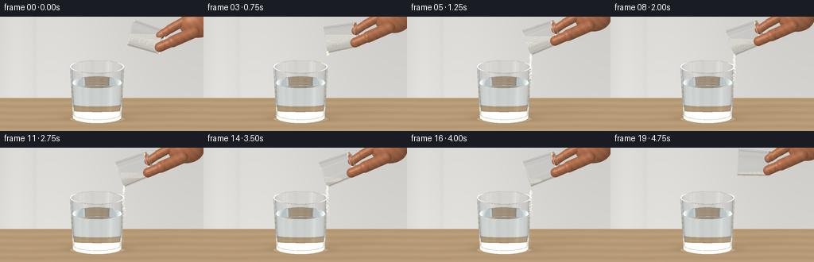

CODING AGENTS AS PIXEL WORLD MODELS
traex/GPT-6.1-Sol · material_0017
点击播放 · 原生 RGB 像素
逐轮保存的候选
回放视频、检查图与代码变化。
每份候选均可单独播放。实际图片检查记录在下方工具轨迹中。
候选 01播放与检查图
点击播放 · 原生 RGB 像素

展开代码变化
--- 上一保存版本
+++ 本次保存版本
@@ -0,0 +1,346 @@
+import math
+from pathlib import Path
+import numpy as np
+from PIL import Image, ImageDraw, ImageFilter
+import artifact_io
+
+ROOT=Path(__file__).resolve().parent
+W,H,S=256,144,3
+WW,HH=W*S,H*S
+rng=np.random.default_rng(27)
+ALPHA=.245
+view=np.array([0.,math.cos(ALPHA),-math.sin(ALPHA)])
+up=np.array([0.,math.sin(ALPHA),math.cos(ALPHA)])
+xx,yy=np.meshgrid((np.arange(WW)+.5)/S,(np.arange(HH)+.5)/S)
+org=np.stack(((xx-128)/39,np.zeros_like(xx),np.zeros_like(xx)),axis=-1)
+org += ((128-yy)/39)[...,None]*up
+org -= 7*view
+ORIG=org.reshape(-1,3)
+DIR=np.broadcast_to(view,ORIG.shape).copy()
+LIGHT=np.array([-.52,-.68,.65]); LIGHT/=np.linalg.norm(LIGHT)
+
+
+def unit(v):
+ return v/np.maximum(np.linalg.norm(v,axis=-1,keepdims=True),1e-12)
+
+def env(d):
+ az=np.arctan2(d[:,0],-d[:,1]); elev=d[:,2]
+ a=np.exp(-((az+.82)/.18)**8)*np.exp(-((elev-.28)/.66)**8)
+ b=np.exp(-((az-1.12)/.09)**6)*np.exp(-((elev-.12)/.83)**6)
+ dark=np.exp(-((az-.33)/.16)**4)
+ grad=np.clip(elev*.13+.53, .3,.85)
+ c=np.stack((grad*1.00,grad*1.01,grad*1.015),-1)
+ c+=a[:,None]*np.array([.63,.61,.56])+b[:,None]*np.array([.40,.43,.44])
+ c-=dark[:,None]*.23
+ return np.clip(c,0,1.4)
+
+
+def backdrop(o,d):
+ # A softly lit, out-of-focus neutral kitchen and pale oak worktop.
+ t=-o[:,2]/np.minimum(d[:,2],-.000001)
+ p=o+d*t[:,None]
+ floor=(d[:,2]<-.001)&(t>0)&(p[:,1]<2.7)
+ screenz=o[:,2]-o[:,1]*d[:,2]/np.where(abs(d[:,1])>.01,d[:,1],.01)
+ wall=np.empty((len(o),3))
+ shade=.81+.055*np.exp(-((o[:,0]+1.7)/2.6)**2)-.025*screenz/3
+ panel=.017*(np.tanh((o[:,0]+2.20)*14)-np.tanh((o[:,0]+2.13)*14))
+ wall[:]=np.stack((shade+.026-panel,shade+.022-panel,shade+.009-panel),-1)
+ wall+=.015*np.exp(-((o[:,0]+2.8)/.3)**2)[:,None]
+ if floor.any():
+ q=p[floor]; x,y=q[:,0],q[:,1]
+ grain=np.sin(43*y+2*np.sin(x*1.3)+.8*np.sin(x*5))*np.sin(y*10+x*.3)
+ finer=np.sin(157*y+4*np.sin(x*.7))
+ broad=np.sin(7*y+.3*np.sin(x*2))
+ col=np.array([.72,.605,.465])[None,:]+(grain*.012+finer*.004+broad*.017)[:,None]
+ # soft contact shadow and restrained glass caustics
+ sh=np.exp(-(((x+.15)/1.01)**2+((y-.10)/.55)**2)*1.7)
+ col*=1-.30*sh[:,None]
+ caust=np.exp(-((np.sqrt(((x+.15)/.82)**2+((y+.09)/.39)**2)-1)/.08)**2)*.13
+ col+=caust[:,None]*np.array([1,.95,.78])
+ # A soft shadow from the held glass.
+ col*=1-(.025*np.exp(-((x-1.4)/1.15)**2-((y-.9)/.9)**2))[:,None]
+ wall[floor]=col
+ return np.clip(wall,0,1)
+
+
+# Glass geometry is analytic: two tapered cylinder walls, a thick base,
+# and a polished annular lip. No external renderer is used.
+class Vessel:
+ def __init__(self,b,a,h,r0,r1,th=.044):
+ self.b=np.array(b,float);self.a=np.array(a,float);self.h=h
+ self.r0=r0;self.r1=r1;self.k=(r1-r0)/h;self.th=th
+ def hits(self,o,d,mode='glass',level=0):
+ n=len(o); best=np.full(n,np.inf); normal=np.zeros((n,3))
+ q=o-self.b; h=q@self.a; v=d@self.a
+ qr=q-h[:,None]*self.a; dr=d-v[:,None]*self.a
+ aa=np.sum(dr*dr,axis=1)-(self.k*v)**2
+ def take(t,norm,valid):
+ nonlocal best,normal
+ ok=valid&(t>1e-5)&(t<best)
+ best[ok]=t[ok];normal[ok]=norm[ok]
+ if mode=='glass':
+ walls=[(self.r0,0,self.h,1),(self.r0-self.th,.105,self.h,-1)]
+ elif mode=='water':
+ walls=[(self.r0-self.th-.009,.112,level,1)]
+ else:
+ walls=[(self.r0-self.th-.008,.112,self.h-.014,1)]
+ for r,lo,hi,sign in walls:
+ rad=r+self.k*h
+ bb=2*(np.sum(qr*dr,axis=1)-rad*self.k*v)
+ cc=np.sum(qr*qr,axis=1)-rad*rad
+ disc=bb*bb-4*aa*cc
+ root=np.sqrt(np.maximum(disc,0)); den=np.where(abs(aa)>1e-12,2*aa,1e-12)
+ for t in [(-bb-root)/den,(-bb+root)/den]:
+ ht=h+t*v; pr=qr+t[:,None]*dr
+ nr=unit(pr-self.k*(r+self.k*ht)[:,None]*self.a)*sign
+ valid=(disc>=0)&(ht>=lo)&(ht<=hi)
+ if mode=='salt':valid&=(o[:,2]+d[:,2]*t<=level)
+ take(t,nr,valid)
+ if mode=='glass':
+ caps=[(0,0,self.r0,-1),(.105,0,self.r0-self.th,1),(self.h,self.r1-self.th,self.r1,1)]
+ elif mode=='water':
+ caps=[(.112,0,self.r0-self.th-.009,-1),(level,0,self.r0+self.k*level-self.th-.009,1)]
+ else:
+ caps=[(.112,0,self.r0+self.k*.112-self.th-.008,-1),(self.h-.014,0,self.r1-self.th-.008,1)]
+ for z,ri,ro,sign in caps:
+ t=(z-h)/np.where(abs(v)>1e-12,v,1e-12)
+ pr=qr+t[:,None]*dr; rr=np.sum(pr*pr,axis=1)
+ valid=(abs(v)>1e-12)&(rr>=ri*ri)&(rr<=ro*ro)
+ if mode=='salt':valid&=(o[:,2]+d[:,2]*t<=level)
+ take(t,np.broadcast_to(self.a*sign,(n,3)),valid)
+ if mode=='salt':
+ t=(level-o[:,2])/np.where(abs(d[:,2])>1e-12,d[:,2],1e-12)
+ hh=h+t*v; pr=qr+t[:,None]*dr
+ valid=(hh>.112)&(hh<self.h-.014)&(np.sum(pr*pr,axis=1)<(self.r0+self.k*hh-self.th-.008)**2)
+ take(t,np.broadcast_to([0.,0.,1.],(n,3)),valid)
+ return best,normal
+
+
+def ellipsoid_hit(o,d,c,r):
+ q=(o-c)/r;v=d/r
+ aa=np.sum(v*v,axis=1);bb=np.sum(q*v,axis=1);cc=np.sum(q*q,axis=1)-1
+ det=bb*bb-aa*cc
+ t=(-bb-np.sqrt(np.maximum(det,0)))/aa
+ p=o+d*t[:,None]
+ nor=unit((p-c)/(r*r))
+ t[(det<0)|(t<1e-5)]=np.inf
+ return t,nor
+
+
+def capsule_hit(o,d,pa,pb,r):
+ ba=pb-pa;oa=o-pa
+ baba=np.dot(ba,ba);bard=d@ba;baoa=oa@ba
+ rdoa=np.sum(d*oa,axis=1);oaoa=np.sum(oa*oa,axis=1)
+ aa=baba-bard*bard;bb=baba*rdoa-baoa*bard;cc=baba*oaoa-baoa*baoa-r*r*baba
+ det=bb*bb-aa*cc
+ t=(-bb-np.sqrt(np.maximum(det,0)))/np.maximum(aa,1e-12)
+ y=baoa+t*bard;good=(det>=0)&(y>0)&(y<baba)&(t>1e-5)
+ nor=unit(oa+t[:,None]*d-y[:,None]/baba*ba)
+ t[~good]=np.inf
+ for c in [pa,pb]:
+ ts,ns=ellipsoid_hit(o,d,c,np.array([r,r,r]))
+ use=ts<t;t[use]=ts[use];nor[use]=ns[use]
+ return t,nor
+
+receiver=Vessel([-.15,0,.035],[0,0,1],1.68,.785,.875,.045)
+WATER=1.17
+# Samples determine the horizontal granular free surface for a given volume.
+sample_rng=np.random.default_rng(11)
+u=sample_rng.uniform(0,1,18000);ang=sample_rng.uniform(0,2*np.pi,len(u));hs=sample_rng.uniform(.112,1.04,len(u))
+rads=np.sqrt(u)*(.372+.026*hs)
+SALT_SAMPLES=np.stack((rads*np.cos(ang),rads*np.sin(ang),hs),-1)
+
+
+def pose(t):
+ ease=lambda a:a*a*(3-2*a)
+ k=ease(np.clip(t/1.15,0,1));withdraw=ease(np.clip((t-3.9)/.85,0,1))
+ theta=math.radians(72+39*k-24*withdraw)
+ c=np.array([1.45-.37*k+.29*withdraw, .03, 2.68+.015*math.sin(t*1.4)+.18*withdraw])
+ a=np.array([-math.sin(theta),0,math.cos(theta)])
+ source=Vessel(c-a*.54,a,1.08,.395,.432,.037)
+ # A modest quantity of coarse salt, resting under gravity as the cup tilts.
+ amount=.51*(1-np.clip((t-.55)/3.15,0,1))+.022
+ across=np.array([math.cos(theta),0,math.sin(theta)])
+ worldz=source.b[2]+SALT_SAMPLES[:,0]*across[2]+SALT_SAMPLES[:,2]*a[2]
+ level=float(np.quantile(worldz,amount))
+ rim=source.b+a*source.h
+ lip=rim-across*(source.r1-.034)
+ # Only part of the gripping hand enters the frame.
+ base=source.b+a*.25
+ delta=base-np.array([1.46,.03,2.80])
+ hand=[('e',np.array([2.82,.11,3.32])+delta,np.array([.59,.35,.45])),
+ ('c',np.array([2.71,-.27,3.14])+delta,np.array([2.02,-.46,2.88])+delta,.185),
+ ('c',np.array([2.02,-.46,2.88])+delta,np.array([1.60,-.45,2.69])+delta,.157),
+ ('c',np.array([2.48,.09,3.47])+delta,np.array([1.94,.02,3.18])+delta,.145),
+ ('c',np.array([1.94,.02,3.18])+delta,np.array([1.62,.025,2.96])+delta,.135)]
+ return source,level,lip,hand
+
+
+def render(t):
+ source,level,lip,hand=pose(t)
+ o=ORIG.copy();d=DIR.copy();medium=np.ones(len(o));weight=np.ones((len(o),3));out=np.zeros((len(o),3));ids=np.arange(len(o))
+ # Forward dielectric ray tracing, including water refraction and softbox Fresnel reflections.
+ for bounce in range(11):
+ if len(o)==0:break
+ n=len(o);dist=np.full(n,np.inf);norm=np.zeros((n,3));mat=np.zeros(n,int)
+ def merge(ts,ns,m):
+ sel=ts<dist;dist[sel]=ts[sel];norm[sel]=ns[sel];mat[sel]=m
+ ts,ns=receiver.hits(o,d);merge(ts,ns,1)
+ ts,ns=source.hits(o,d);merge(ts,ns,1)
+ ts,ns=receiver.hits(o,d,'water',WATER);merge(ts,ns,2)
+ ts,ns=source.hits(o,d,'salt',level);merge(ts,ns,3)
+ # Fingers and palm with diffuse skin, subtle texture and broad specular light.
+ for h in hand:
+ if h[0]=='e':ts,ns=ellipsoid_hit(o,d,h[1],h[2])
+ else:ts,ns=capsule_hit(o,d,h[1],h[2],h[3])
+ merge(ts,ns,4)
+ miss=mat==0
+ if miss.any():out[ids[miss]]+=weight[miss]*backdrop(o[miss],d[miss])
+ hit=~miss
+ if not hit.any():break
+ o=o[hit];d=d[hit];dist=dist[hit];norm=norm[hit];mat=mat[hit];ids=ids[hit];weight=weight[hit];medium=medium[hit]
+ p=o+d*dist[:,None]
+ weight*=np.exp(-dist[:,None]*(medium==1.333)[:,None]*np.array([.025,.009,.005]))
+ opaque=mat>=3
+ if opaque.any():
+ q=p[opaque];nn=norm[opaque];dd=d[opaque];mm=mat[opaque]
+ lam=np.maximum(nn@LIGHT,0)
+ salt=mm==3
+ col=np.zeros((len(q),3))
+ if salt.any():
+ z=q[salt]
+ tex=np.sin(z[:,0]*771+np.sin(z[:,1]*462)*2)*np.sin(z[:,2]*643+z[:,1]*319)
+ coarse=np.sin(z[:,0]*129+z[:,2]*239)*np.sin(z[:,1]*204-z[:,2]*129)
+ shade=.77+.17*lam[salt]+tex*.045+coarse*.025
+ col[salt]=shade[:,None]*np.array([1.0,.985,.95])
+ if (~salt).any():
+ z=q[~salt];n2=nn[~salt]
+ fine=np.sin(z[:,0]*221+z[:,1]*187)*np.sin(z[:,2]*357)*.011
+ broad=np.sin(z[:,0]*24+z[:,2]*22)*.012
+ dif=.63+.34*lam[~salt]
+ col[~salt]=dif[:,None]*np.array([.73,.465,.325])+fine[:,None]+broad[:,None]
+ halfv=unit(LIGHT-dd[~salt]);spec=np.maximum(np.sum(n2*halfv,axis=1),0)**30
+ col[~salt]+=spec[:,None]*.14
+ # Fine curved creases near the bending thumb, not black outlines.
+ crease=np.exp(-((z[:,0]-2.03)/.018)**2)*np.clip((-.29-z[:,1])*4,0,1)*.040
+ col[~salt]-=crease[:,None]
+ out[ids[opaque]]+=weight[opaque]*np.clip(col,0,1)
+ keep=~opaque
+ if not keep.any():break
+ p=p[keep];d=d[keep];norm=norm[keep];mat=mat[keep];ids=ids[keep];weight=weight[keep];medium=medium[keep]
+ entering=np.sum(d*norm,axis=1)<0
+ nn=norm*np.where(entering,1.,-1.)[:,None]
+ dest=np.where(mat==1,1.51,1.333)
+ dest[~entering]=1.
+ # Glass inner wall directly in contact with water.
+ insidewater=((p[:,2]>.147)&(p[:,2]<receiver.b[2]+WATER-.0005)&((p[:,0]+.15)**2+p[:,1]**2<(.835)**2))
+ dest[(mat==1)&(~entering)&insidewater]=1.333
+ cosi=-np.sum(d*nn,axis=1)
+ eta=medium/dest;kk=1-eta*eta*(1-cosi*cosi)
+ r0=((medium-dest)/(medium+dest))**2
+ fres=r0+(1-r0)*(1-cosi)**5
+ reflect=d+2*cosi[:,None]*nn
+ out[ids]+=weight*fres[:,None]*env(reflect)
+ weight*=1-fres[:,None]
+ # Fresnel highlights around the slight waves on the water surface.
+ top=(mat==2)&(entering)&(norm[:,2]>.7)
+ if top.any():
+ pp=p[top]; rr=np.sqrt((pp[:,0]-lip[0])**2+pp[:,1]**2)
+ fade=np.clip((t-.65)/.5,0,1)*np.clip((4.9-t)/1.4,0,1)
+ wave=np.cos(rr*62-t*17)*np.exp(-rr*3)*.008*fade
+ nn[top,0]+=wave*(pp[:,0]-lip[0])/np.maximum(rr,.001)
+ nn[top,1]+=wave*pp[:,1]/np.maximum(rr,.001)
+ nn=unit(nn);cosi=-np.sum(d*nn,axis=1);kk=1-eta*eta*(1-cosi*cosi)
+ refr=eta[:,None]*d+(eta*cosi-np.sqrt(np.maximum(kk,0)))[:,None]*nn
+ tir=kk<0
+ # Total internal reflection is followed rather than drawn as an opaque rim.
+ refr[tir]=reflect[tir];medium=np.where(tir,medium,dest)
+ weight[tir]/=np.maximum(1-fres[tir,None],.001)
+ d=unit(refr);o=p+d*.00008
+ strong=np.max(weight,axis=1)>.009
+ o=o[strong];d=d[strong];medium=medium[strong];ids=ids[strong];weight=weight[strong]
+ if len(o):out[ids]+=weight*backdrop(o,d)
+ return np.clip(out.reshape(HH,WW,3),0,1),lip
+
+
+def project(p):
+ p=np.asarray(p)
+ return np.stack((128+39*p[...,0],128-39*(p@up)),axis=-1)
+
+# Deterministic grain births give a coherent fine stream rather than flickering noise.
+prng=np.random.default_rng(451)
+BIRTHS=np.sort(prng.uniform(.55,3.83,1400))
+OFFSETS=prng.normal(0,1,(len(BIRTHS),3))
+SIZES=prng.uniform(.16,.44,len(BIRTHS))
+BRIGHT=prng.uniform(.72,1,len(BIRTHS))
+
+
+def add_details(arr,t,lip):
+ # Very faint dissolving salt filaments in the otherwise clear water.
+ X,Y=xx,yy
+ mask=((Y>87)&(Y<126)&(X>94)&(X<156))
+ opacity=np.zeros((HH,WW))
+ impactx=float(project(lip)[0]); age=max(0,t-.75)
+ if age>0:
+ for j in range(4):
+ center=impactx-2.0-j*2.1+1.2*np.sin(Y*.15-t*1.4+j)
+ spread=1.2+(Y-87)*.115+j*.7
+ depth=np.clip(age*15-j*3,0,37)
+ vertical=np.exp(-((Y-(89+depth*.56+j*3))/max(5,depth*.60))**4)
+ op=np.exp(-((X-center)/np.maximum(spread,1))**2)*vertical
+ opacity+=op*.031*np.clip(age*1.5,0,1)*(1-j*.17)
+ opacity*=mask
+ arr=arr*(1-opacity[...,None])+np.array([.88,.92,.91])*opacity[...,None]
+ img=Image.fromarray(np.uint8(np.clip(arr*255,0,255)),'RGB').convert('RGBA')
+ layer=Image.new('RGBA',(WW,HH));draw=ImageDraw.Draw(layer)
+ # Water surface ripple arcs, subtle enough that the water remains visibly clear.
+ if .8<t<4.75:
+ k=np.clip((t-.8)*2,0,1)*np.clip((4.75-t),0,1)
+ ix=impactx-1
+ for j in range(3):
+ rad=3+((t*13+j*7)%23)
+ a=int(28*k*(1-rad/35))
+ box=((ix-rad)*S,(85.7-rad*.21)*S,(ix+rad)*S,(85.7+rad*.21)*S)
+ if ix+rad<158:draw.arc(box,8,173,fill=(250,253,250,a),width=1)
+ # Fine airborne crystals accelerate downward under gravity.
+ for i,b in enumerate(BIRTHS):
+ age=t-b
+ if age<0 or age>.60:continue
+ _,_,pl,_=pose(float(b))
+ p=pl.copy();p[0]+=-.046*age+OFFSETS[i,0]*(.012+.028*age)
+ p[1]+=OFFSETS[i,1]*.019
+ p[2]-=.18*age+4.2*age*age
+ if p[2]<receiver.b[2]+WATER:
+ # A few visible crystals sink briefly, then disappear by dissolution.
+ below=receiver.b[2]+WATER-p[2]
+ if below>.42 or i%4!=0:continue
+ p[2]=receiver.b[2]+WATER-below*.65
+ alpha=int(110*(1-below/.45));rr=SIZES[i]*S*.65
+ else:
+ alpha=int(245*BRIGHT[i]);rr=SIZES[i]*S
+ x,y=project(p);x*=S;y*=S
+ draw.ellipse((x-rr,y-rr,x+rr,y+rr*1.5),fill=(255,254,243,alpha))
+ # A handful of tiny bright points at the surface, not a dramatic splash.
+ if .9<t<4.1:
+ r=np.random.default_rng(900+int(t*4))
+ for j in range(9):
+ x=(impactx+r.normal(0,2.4))*S;y=(85.4+r.normal(0,.8))*S
+ a=int(r.uniform(80,155));z=r.uniform(.14,.28)*S
+ draw.ellipse((x-z,y-z,x+z,y+z),fill=(255,255,248,a))
+ img=Image.alpha_composite(img,layer).convert('RGB')
+ # Downsampling integrates the small crystals and gives smooth polished glass edges.
+ img=img.resize((W,H),Image.Resampling.LANCZOS)
+ return np.asarray(img)
+
+
+def main():
+ frames=[]
+ for i in range(20):
+ print(f'Rendering {i+1}/20',flush=True)
+ t=i/4
+ arr,lip=render(t)
+ frames.append(add_details(arr,t,lip))
+ artifact_io.save(np.asarray(frames,dtype=np.uint8),ROOT)
+ print('Saved RGB video artifacts.',flush=True)
+
+if __name__=='__main__':main()
候选 02播放与检查图
点击播放 · 原生 RGB 像素
展开代码变化
--- 上一保存版本
+++ 本次保存版本
@@ -51,7 +51,7 @@
grain=np.sin(43*y+2*np.sin(x*1.3)+.8*np.sin(x*5))*np.sin(y*10+x*.3)
finer=np.sin(157*y+4*np.sin(x*.7))
broad=np.sin(7*y+.3*np.sin(x*2))
- col=np.array([.72,.605,.465])[None,:]+(grain*.012+finer*.004+broad*.017)[:,None]
+ col=np.array([.72,.605,.465])[None,:]+(grain*.004+finer*.002+broad*.005)[:,None]
# soft contact shadow and restrained glass caustics
sh=np.exp(-(((x+.15)/1.01)**2+((y-.10)/.55)**2)*1.7)
col*=1-.30*sh[:,None]
@@ -155,7 +155,7 @@
ease=lambda a:a*a*(3-2*a)
k=ease(np.clip(t/1.15,0,1));withdraw=ease(np.clip((t-3.9)/.85,0,1))
theta=math.radians(72+39*k-24*withdraw)
- c=np.array([1.45-.37*k+.29*withdraw, .03, 2.68+.015*math.sin(t*1.4)+.18*withdraw])
+ c=np.array([1.45-.68*k+.29*withdraw, .03, 2.68+.015*math.sin(t*1.4)+.18*withdraw])
a=np.array([-math.sin(theta),0,math.cos(theta)])
source=Vessel(c-a*.54,a,1.08,.395,.432,.037)
# A modest quantity of coarse salt, resting under gravity as the cup tilts.
@@ -269,9 +269,9 @@
# Deterministic grain births give a coherent fine stream rather than flickering noise.
prng=np.random.default_rng(451)
-BIRTHS=np.sort(prng.uniform(.55,3.83,1400))
+BIRTHS=np.sort(prng.uniform(.55,3.83,2100))
OFFSETS=prng.normal(0,1,(len(BIRTHS),3))
-SIZES=prng.uniform(.16,.44,len(BIRTHS))
+SIZES=prng.uniform(.19,.46,len(BIRTHS))
BRIGHT=prng.uniform(.72,1,len(BIRTHS))
@@ -288,10 +288,10 @@
depth=np.clip(age*15-j*3,0,37)
vertical=np.exp(-((Y-(89+depth*.56+j*3))/max(5,depth*.60))**4)
op=np.exp(-((X-center)/np.maximum(spread,1))**2)*vertical
- opacity+=op*.031*np.clip(age*1.5,0,1)*(1-j*.17)
+ opacity+=op*.042*np.clip(age*1.5,0,1)*(1-j*.17)
opacity*=mask
arr=arr*(1-opacity[...,None])+np.array([.88,.92,.91])*opacity[...,None]
- img=Image.fromarray(np.uint8(np.clip(arr*255,0,255)),'RGB').convert('RGBA')
+ img=Image.fromarray(np.uint8(np.clip(arr*255,0,255))).convert('RGBA')
layer=Image.new('RGBA',(WW,HH));draw=ImageDraw.Draw(layer)
# Water surface ripple arcs, subtle enough that the water remains visibly clear.
if .8<t<4.75:
候选 03播放与检查图
可观测工具轨迹
实际执行的命令与返回图片。
命令 1exit 0
/bin/bash -lc 'ls -la && cat prompt.txt && cat GENERATION_RULES.md && cat task_spec.json'
命令 2exit 0
/bin/bash -lc "cat artifact_io.py && python - <<'PY' import importlib.util for name in ['numpy','PIL','scipy']: print(name, bool(importlib.util.find_spec(name))) PY"
命令 3exit 0
/bin/bash -lc "cat > generate.py <<'PY'
import math
from pathlib import Path
import numpy as np
from PIL import Image, ImageDraw, ImageFilter
import artifact_io
ROOT=Path(__file__).resolve().parent
W,H,S=256,144,3
WW,HH=W*S,H*S
rng=np.random.default_rng(27)
ALPHA=.245
view=np.array([0.,math.cos(ALPHA),-math.sin(ALPHA)])
up=np.array([0.,math.sin(ALPHA),math.cos(ALPHA)])
xx,yy=np.meshgrid((np.arange(WW)+.5)/S,(np.arange(HH)+.5)/S)
org=np.stack(((xx-128)/39,np.zeros_like(xx),np.zeros_like(xx)),axis=-1)
org += ((128-yy)/39)[...,None]*up
org -= 7*view
ORIG=org.reshape(-1,3)
DIR=np.broadcast_to(view,ORIG.shape).copy()
LIGHT=np.array([-.52,-.68,.65]); LIGHT/=np.linalg.norm(LIGHT)
def unit(v):
return v/np.maximum(np.linalg.norm(v,axis=-1,keepdims=True),1e-12)
def env(d):
az=np.arctan2(d[:,0],-d[:,1]); elev=d[:,2]
a=np.exp(-((az+.82)/.18)**8)*np.exp(-((elev-.28)/.66)**8)
b=np.exp(-((az-1.12)/.09)**6)*np.exp(-((elev-.12)/.83)**6)
dark=np.exp(-((az-.33)/.16)**4)
grad=np.clip(elev*.13+.53, .3,.85)
c=np.stack((grad*1.00,grad*1.01,grad*1.015),-1)
c+=a[:,None]*np.array([.63,.61,.56])+b[:,None]*np.array([.40,.43,.44])
c-=dark[:,None]*.23
return np.clip(c,0,1.4)
def backdrop(o,d):
# A softly lit, out-of-focus neutral kitchen and pale oak worktop.
t=-o[:,2]/np.minimum(d[:,2],-.000001)
p=o+d*t[:,None]
floor=(d[:,2]<-.001)&(t>0)&(p[:,1]<2.7)
screenz=o[:,2]-o[:,1]*d[:,2]/np.where(abs(d[:,1])>.01,d[:,1],.01)
wall=np.empty((len(o),3))
shade=.81+.055*np.exp(-((o[:,0]+1.7)/2.6)**2)-.025*screenz/3
panel=.017*(np.tanh((o[:,0]+2.20)*14)-np.tanh((o[:,0]+2.13)*14))
wall[:]=np.stack((shade+.026-panel,shade+.022-panel,shade+.009-panel),-1)
wall+=.015*np.exp(-((o[:,0]+2.8)/.3)**2)[:,None]
if floor.any():
q=p[floor]; x,y=q[:,0],q[:,1]
grain=np.sin(43*y+2*np.sin(x*1.3)+.8*np.sin(x*5))*np.sin(y*10+x*.3)
finer=np.sin(157*y+4*np.sin(x*.7))
broad=np.sin(7*y+.3*np.sin(x*2))
col=np.array([.72,.605,.465])[None,:]+(grain*.012+finer*.004+broad*.017)[:,None]
# soft contact shadow and restrained glass caustics
sh=np.exp(-(((x+.15)/1.01)**2+((y-.10)/.55)**2)*1.7)
col*=1-.30*sh[:,None]
caust=np.exp(-((np.sqrt(((x+.15)/.82)**2+((y+.09)/.39)**2)-1)/.08)**2)*.13
col+=caust[:,None]*np.array([1,.95,.78])
# A soft shadow from the held glass.
col*=1-(.025*np.exp(-((x-1.4)/1.15)**2-((y-.9)/.9)**2))[:,None]
wall[floor]=col
return np.clip(wall,0,1)
# Glass geometry is analytic: two tapered cylinder walls, a thick base,
# and a polished annular lip. No external renderer is used.
class Vessel:
def __init__(self,b,a,h,r0,r1,th=.044):
self.b=np.array(b,float);self.a=np.array(a,float);self.h=h
self.r0=r0;self.r1=r1;self.k=(r1-r0)/h;self.th=th
def hits(self,o,d,mode='glass',level=0):
n=len(o); best=np.full(n,np.inf); normal=np.zeros((n,3))
q=o-self.b; h=q@self.a; v=d@self.a
qr=q-h[:,None]*self.a; dr=d-v[:,None]*self.a
aa=np.sum(dr*dr,axis=1)-(self.k*v)**2
def take(t,norm,valid):
nonlocal best,normal
ok=valid&(t>1e-5)&(t<best)
best[ok]=t[ok];normal[ok]=norm[ok]
if mode=='glass':
walls=[(self.r0,0,self.h,1),(self.r0-self.th,.105,self.h,-1)]
elif mode=='water':
walls=[(self.r0-self.th-.009,.112,level,1)]
else:
walls=[(self.r0-self.th-.008,.112,self.h-.014,1)]
for r,lo,hi,sign in walls:
rad=r+self.k*h
bb=2*(np.sum(qr*dr,axis=1)-rad*self.k*v)
cc=np.sum(qr*qr,axis=1)-rad*rad
disc=bb*bb-4*aa*cc
root=np.sqrt(np.maximum(disc,0)); den=np.where(abs(aa)>1e-12,2*aa,1e-12)
for t in [(-bb-root)/den,(-bb+root)/den]:
ht=h+t*v; pr=qr+t[:,None]*dr
nr=unit(pr-self.k*(r+self.k*ht)[:,None]*self.a)*sign
valid=(disc>=0)&(ht>=lo)&(ht<=hi)
if mode=='salt':valid&=(o[:,2]+d[:,2]*t<=level)
take(t,nr,valid)
if mode=='glass':
caps=[(0,0,self.r0,-1),(.105,0,self.r0-self.th,1),(self.h,self.r1-self.th,self.r1,1)]
elif mode=='water':
caps=[(.112,0,self.r0-self.th-.009,-1),(level,0,self.r0+self.k*level-self.th-.009,1)]
else:
caps=[(.112,0,self.r0+self.k*.112-self.th-.008,-1),(self.h-.014,0,self.r1-self.th-.008,1)]
for z,ri,ro,sign in caps:
t=(z-h)/np.where(abs(v)>1e-12,v,1e-12)
pr=qr+t[:,None]*dr; rr=np.sum(pr*pr,axis=1)
valid=(abs(v)>1e-12)&(rr>=ri*ri)&(rr<=ro*ro)
if mode=='salt':valid&=(o[:,2]+d[:,2]*t<=level)
take(t,np.broadcast_to(self.a*sign,(n,3)),valid)
if mode=='salt':
t=(level-o[:,2])/np.where(abs(d[:,2])>1e-12,d[:,2],1e-12)
hh=h+t*v; pr=qr+t[:,None]*dr
valid=(hh>.112)&(hh<self.h-.014)&(np.sum(pr*pr,axis=1)<(self.r0+self.k*hh-self.th-.008)**2)
take(t,np.broadcast_to([0.,0.,1.],(n,3)),valid)
return best,normal
def ellipsoid_hit(o,d,c,r):
q=(o-c)/r;v=d/r
aa=np.sum(v*v,axis=1);bb=np.sum(q*v,axis=1);cc=np.sum(q*q,axis=1)-1
det=bb*bb-aa*cc
t=(-bb-np.sqrt(np.maximum(det,0)))/aa
p=o+d*t[:,None]
nor=unit((p-c)/(r*r))
t[(det<0)|(t<1e-5)]=np.inf
return t,nor
def capsule_hit(o,d,pa,pb,r):
ba=pb-pa;oa=o-pa
baba=np.dot(ba,ba);bard=d@ba;baoa=oa@ba
rdoa=np.sum(d*oa,axis=1);oaoa=np.sum(oa*oa,axis=1)
aa=baba-bard*bard;bb=baba*rdoa-baoa*bard;cc=baba*oaoa-baoa*baoa-r*r*baba
det=bb*bb-aa*cc
t=(-bb-np.sqrt(np.maximum(det,0)))/np.maximum(aa,1e-12)
y=baoa+t*bard;good=(det>=0)&(y>0)&(y<baba)&(t>1e-5)
nor=unit(oa+t[:,None]*d-y[:,None]/baba*ba)
t[~good]=np.inf
for c in [pa,pb]:
ts,ns=ellipsoid_hit(o,d,c,np.array([r,r,r]))
use=ts<t;t[use]=ts[use];nor[use]=ns[use]
return t,nor
receiver=Vessel([-.15,0,.035],[0,0,1],1.68,.785,.875,.045)
WATER=1.17
# Samples determine the horizontal granular free surface for a given volume.
sample_rng=np.random.default_rng(11)
u=sample_rng.uniform(0,1,18000);ang=sample_rng.uniform(0,2*np.pi,len(u));hs=sample_rng.uniform(.112,1.04,len(u))
rads=np.sqrt(u)*(.372+.026*hs)
SALT_SAMPLES=np.stack((rads*np.cos(ang),rads*np.sin(ang),hs),-1)
def pose(t):
ease=lambda a:a*a*(3-2*a)
k=ease(np.clip(t/1.15,0,1));withdraw=ease(np.clip((t-3.9)/.85,0,1))
theta=math.radians(72+39*k-24*withdraw)
c=np.array([1.45-.37*k+.29*withdraw, .03, 2.68+.015*math.sin(t*1.4)+.18*withdraw])
a=np.array([-math.sin(theta),0,math.cos(theta)])
source=Vessel(c-a*.54,a,1.08,.395,.432,.037)
# A modest quantity of coarse salt, resting under gravity as the cup tilts.
amount=.51*(1-np.clip((t-.55)/3.15,0,1))+.022
across=np.array([math.cos(theta),0,math.sin(theta)])
worldz=source.b[2]+SALT_SAMPLES[:,0]*across[2]+SALT_SAMPLES[:,2]*a[2]
level=float(np.quantile(worldz,amount))
rim=source.b+a*source.h
lip=rim-across*(source.r1-.034)
# Only part of the gripping hand enters the frame.
base=source.b+a*.25
delta=base-np.array([1.46,.03,2.80])
hand=[('e',np.array([2.82,.11,3.32])+delta,np.array([.59,.35,.45])),
('c',np.array([2.71,-.27,3.14])+delta,np.array([2.02,-.46,2.88])+delta,.185),
('c',np.array([2.02,-.46,2.88])+delta,np.array([1.60,-.45,2.69])+delta,.157),
('c',np.array([2.48,.09,3.47])+delta,np.array([1.94,.02,3.18])+delta,.145),
('c',np.array([1.94,.02,3.18])+delta,np.array([1.62,.025,2.96])+delta,.135)]
return source,level,lip,hand
def render(t):
source,level,lip,hand=pose(t)
o=ORIG.copy();d=DIR.copy();medium=np.ones(len(o));weight=np.ones((len(o),3));out=np.zeros((len(o),3));ids=np.arange(len(o))
# Forward dielectric ray tracing, including water refraction and softbox Fresnel reflections.
for bounce in range(11):
if len(o)==0:break
n=len(o);dist=np.full(n,np.inf);norm=np.zeros((n,3));mat=np.zeros(n,int)
def merge(ts,ns,m):
sel=ts<dist;dist[sel]=ts[sel];norm[sel]=ns[sel];mat[sel]=m
ts,ns=receiver.hits(o,d);merge(ts,ns,1)
ts,ns=source.hits(o,d);merge(ts,ns,1)
ts,ns=receiver.hits(o,d,'water',WATER);merge(ts,ns,2)
ts,ns=source.hits(o,d,'salt',level);merge(ts,ns,3)
# Fingers and palm with diffuse skin, subtle texture and broad specular light.
for h in hand:
if h[0]=='e':ts,ns=ellipsoid_hit(o,d,h[1],h[2])
else:ts,ns=capsule_hit(o,d,h[1],h[2],h[3])
merge(ts,ns,4)
miss=mat==0
if miss.any():out[ids[miss]]+=weight[miss]*backdrop(o[miss],d[miss])
hit=~miss
if not hit.any():break
o=o[hit];d=d[hit];dist=dist[hit];norm=norm[hit];mat=mat[hit];ids=ids[hit];weight=weight[hit];medium=medium[hit]
p=o+d*dist[:,None]
weight*=np.exp(-dist[:,None]*(medium==1.333)[:,None]*np.array([.025,.009,.005]))
opaque=mat>=3
if opaque.any():
q=p[opaque];nn=norm[opaque];dd=d[opaque];mm=mat[opaque]
lam=np.maximum(nn@LIGHT,0)
salt=mm==3
col=np.zeros((len(q),3))
if salt.any():
z=q[salt]
tex=np.sin(z[:,0]*771+np.sin(z[:,1]*462)*2)*np.sin(z[:,2]*643+z[:,1]*319)
coarse=np.sin(z[:,0]*129+z[:,2]*239)*np.sin(z[:,1]*204-z[:,2]*129)
shade=.77+.17*lam[salt]+tex*.045+coarse*.025
col[salt]=shade[:,None]*np.array([1.0,.985,.95])
if (~salt).any():
z=q[~salt];n2=nn[~salt]
fine=np.sin(z[:,0]*221+z[:,1]*187)*np.sin(z[:,2]*357)*.011
broad=np.sin(z[:,0]*24+z[:,2]*22)*.012
dif=.63+.34*lam[~salt]
col[~salt]=dif[:,None]*np.array([.73,.465,.325])+fine[:,None]+broad[:,None]
halfv=unit(LIGHT-dd[~salt]);spec=np.maximum(np.sum(n2*halfv,axis=1),0)**30
col[~salt]+=spec[:,None]*.14
# Fine curved creases near the bending thumb, not black outlines.
crease=np.exp(-((z[:,0]-2.03)/.018)**2)*np.clip((-.29-z[:,1])*4,0,1)*.040
col[~salt]-=crease[:,None]
out[ids[opaque]]+=weight[opaque]*np.clip(col,0,1)
keep=~opaque
if not keep.any():break
p=p[keep];d=d[keep];norm=norm[keep];mat=mat[keep];ids=ids[keep];weight=weight[keep];medium=medium[keep]
entering=np.sum(d*norm,axis=1)<0
nn=norm*np.where(entering,1.,-1.)[:,None]
dest=np.where(mat==1,1.51,1.333)
dest[~entering]=1.
# Glass inner wall directly in contact with water.
insidewater=((p[:,2]>.147)&(p[:,2]<receiver.b[2]+WATER-.0005)&((p[:,0]+.15)**2+p[:,1]**2<(.835)**2))
dest[(mat==1)&(~entering)&insidewater]=1.333
cosi=-np.sum(d*nn,axis=1)
eta=medium/dest;kk=1-eta*eta*(1-cosi*cosi)
r0=((medium-dest)/(medium+dest))**2
fres=r0+(1-r0)*(1-cosi)**5
reflect=d+2*cosi[:,None]*nn
out[ids]+=weight*fres[:,None]*env(reflect)
weight*=1-fres[:,None]
# Fresnel highlights around the slight waves on the water surface.
top=(mat==2)&(entering)&(norm[:,2]>.7)
if top.any():
pp=p[top]; rr=np.sqrt((pp[:,0]-lip[0])**2+pp[:,1]**2)
fade=np.clip((t-.65)/.5,0,1)*np.clip((4.9-t)/1.4,0,1)
wave=np.cos(rr*62-t*17)*np.exp(-rr*3)*.008*fade
nn[top,0]+=wave*(pp[:,0]-lip[0])/np.maximum(rr,.001)
nn[top,1]+=wave*pp[:,1]/np.maximum(rr,.001)
nn=unit(nn);cosi=-np.sum(d*nn,axis=1);kk=1-eta*eta*(1-cosi*cosi)
refr=eta[:,None]*d+(eta*cosi-np.sqrt(np.maximum(kk,0)))[:,None]*nn
tir=kk<0
# Total internal reflection is followed rather than drawn as an opaque rim.
refr[tir]=reflect[tir];medium=np.where(tir,medium,dest)
weight[tir]/=np.maximum(1-fres[tir,None],.001)
d=unit(refr);o=p+d*.00008
strong=np.max(weight,axis=1)>.009
o=o[strong];d=d[strong];medium=medium[strong];ids=ids[strong];weight=weight[strong]
if len(o):out[ids]+=weight*backdrop(o,d)
return np.clip(out.reshape(HH,WW,3),0,1),lip
def project(p):
p=np.asarray(p)
return np.stack((128+39*p[...,0],128-39*(p@up)),axis=-1)
# Deterministic grain births give a coherent fine stream rather than flickering noise.
prng=np.random.default_rng(451)
BIRTHS=np.sort(prng.uniform(.55,3.83,1400))
OFFSETS=prng.normal(0,1,(len(BIRTHS),3))
SIZES=prng.uniform(.16,.44,len(BIRTHS))
BRIGHT=prng.uniform(.72,1,len(BIRTHS))
def add_details(arr,t,lip):
# Very faint dissolving salt filaments in the otherwise clear water.
X,Y=xx,yy
mask=((Y>87)&(Y<126)&(X>94)&(X<156))
opacity=np.zeros((HH,WW))
impactx=float(project(lip)[0]); age=max(0,t-.75)
if age>0:
for j in range(4):
center=impactx-2.0-j*2.1+1.2*np.sin(Y*.15-t*1.4+j)
spread=1.2+(Y-87)*.115+j*.7
depth=np.clip(age*15-j*3,0,37)
vertical=np.exp(-((Y-(89+depth*.56+j*3))/max(5,depth*.60))**4)
op=np.exp(-((X-center)/np.maximum(spread,1))**2)*vertical
opacity+=op*.031*np.clip(age*1.5,0,1)*(1-j*.17)
opacity*=mask
arr=arr*(1-opacity[...,None])+np.array([.88,.92,.91])*opacity[...,None]
img=Image.fromarray(np.uint8(np.clip(arr*255,0,255)),'RGB').convert('RGBA')
layer=Image.new('RGBA',(WW,HH));draw=ImageDraw.Draw(layer)
# Water surface ripple arcs, subtle enough that the water remains visibly clear.
if .8<t<4.75:
k=np.clip((t-.8)*2,0,1)*np.clip((4.75-t),0,1)
ix=impactx-1
for j in range(3):
rad=3+((t*13+j*7)%23)
a=int(28*k*(1-rad/35))
box=((ix-rad)*S,(85.7-rad*.21)*S,(ix+rad)*S,(85.7+rad*.21)*S)
if ix+rad<158:draw.arc(box,8,173,fill=(250,253,250,a),width=1)
# Fine airborne crystals accelerate downward under gravity.
for i,b in enumerate(BIRTHS):
age=t-b
if age<0 or age>.60:continue
_,_,pl,_=pose(float(b))
p=pl.copy();p[0]+=-.046*age+OFFSETS[i,0]*(.012+.028*age)
p[1]+=OFFSETS[i,1]*.019
p[2]-=.18*age+4.2*age*age
if p[2]<receiver.b[2]+WATER:
# A few visible crystals sink briefly, then disappear by dissolution.
below=receiver.b[2]+WATER-p[2]
if below>.42 or i%4"'!=0:continue
p[2]=receiver.b[2]+WATER-below*.65
alpha=int(110*(1-below/.45));rr=SIZES[i]*S*.65
else:
alpha=int(245*BRIGHT[i]);rr=SIZES[i]*S
x,y=project(p);x*=S;y*=S
draw.ellipse((x-rr,y-rr,x+rr,y+rr*1.5),fill=(255,254,243,alpha))
# A handful of tiny bright points at the surface, not a dramatic splash.
if .9<t<4.1:
r=np.random.default_rng(900+int(t*4))
for j in range(9):
x=(impactx+r.normal(0,2.4))*S;y=(85.4+r.normal(0,.8))*S
a=int(r.uniform(80,155));z=r.uniform(.14,.28)*S
draw.ellipse((x-z,y-z,x+z,y+z),fill=(255,255,248,a))
img=Image.alpha_composite(img,layer).convert('"'RGB')
# Downsampling integrates the small crystals and gives smooth polished glass edges.
img=img.resize((W,H),Image.Resampling.LANCZOS)
return np.asarray(img)
def main():
frames=[]
for i in range(20):
print(f'Rendering {i+1}/20',flush=True)
t=i/4
arr,lip=render(t)
frames.append(add_details(arr,t,lip))
artifact_io.save(np.asarray(frames,dtype=np.uint8),ROOT)
print('Saved RGB video artifacts.',flush=True)
if __name__=='__main__':main()
PY
OPENBLAS_NUM_THREADS=1 python generate.py"命令 4exit 0
/bin/bash -lc "python - <<'PY'
p='generate.py'
s=open(p).read().replace('grain*.012+finer*.004+broad*.017','grain*.004+finer*.002+broad*.005').replace('1.45-.37*k+.29*withdraw','1.45-.68*k+.29*withdraw').replace('3.83,1400','3.83,2100').replace('uniform(.16,.44','uniform(.19,.46').replace('op*.031','op*.042').replace(\"Image.fromarray(np.uint8(np.clip(arr*255,0,255)),'RGB')\",\"Image.fromarray(np.uint8(np.clip(arr*255,0,255)))\")
open(p,'w').write(s)
PY
OPENBLAS_NUM_THREADS=1 python generate.py"命令 5exit 0
/bin/bash -lc "python - <<'PY'
from pathlib import Path
import numpy as np
p=np.load('pixels.npz')['pixels']
assert p.shape==(144,256,20)
assert len(list(Path('frames').glob('*.png')))==20
for f in ['generate.py','pixels.npz','index.html','inspection.png','transition_check.png']:
print(f,Path(f).stat().st_size)
PY"视觉工具实际返回图片 1

视觉工具实际返回图片 2

保存候选 3 份；完成命令 5 次；可验证图片返回 2 张。原始 API 响应与完整日志保留在本地。